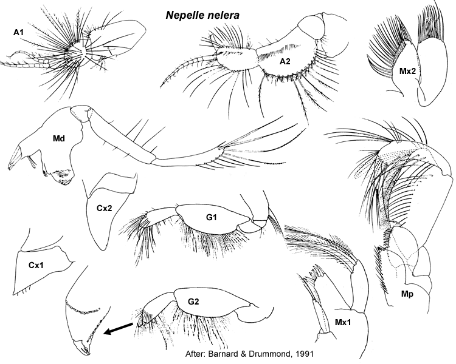

Nepelle nelera Barnard & Drummond, 1991: 278, figs 1–3.
Type Material. Lodged in the NMV.
Type Locality. Eddystone Point, Tasmania, Australia, D. Hoggins, August 1978.
Description.Antenna 1 peduncular article 1 setal row with
only slender setae, proximal pair of setae simple; accessory flagellum
7–8 -articulate; primary flagellum 8–10 -articulate. Antenna 2 peduncular article 4 main setal row with robust and slender setae, proximal part of row evenly angled. Mandible incisors with 2 weak teeth. Maxilla 1 palp with some setae displaced subapically.
Gnathopod 1 simple; coxa small, trapezoidal, subequal in size to coxa 2. Gnathopod 2 minutely subchelate, propodus palm acute. Pereopod 3 coxa large, smaller than coxa 4. Pereopod 4 coxa large. Pereopod 5 basis with mediofacial brush of setae; dactylus with robust setae. Pereopod 6 basis moderately expanded, margins parallel; merus with few or no slender setae on posterior margin; dactylus vestigial. Pereopod 7
coxa without long posterior spine; basis moderately expanded, posterior
margins tapering distally, with slender setae along posteroproximal
margin; dactylus vestigial.
Epimeron 2 subequal in size to epimeron 3, posteroventral corner with small spine, more setose than epimeron 3. Epimeron 3 posteroventral corner with large spine. Uropod 1 inner ramus slightly shorter than outer ramus, not fused to peduncle. Uropod 2 inner ramus shorter than outer ramus, not fused to peduncle. Telson subequal in length and breadth, moderately cleft (to about 50%).
Distribution.Australia: Eddystone Point, Tasmania.

___________________________
This
publication should be cited as: Kilgallen, N.M. & Lowry, J.K. 2008.
Urohaustoriidae (Amphipoda): World Genera and Species. Version 1. 1
January 2008. http://crustacea.net.